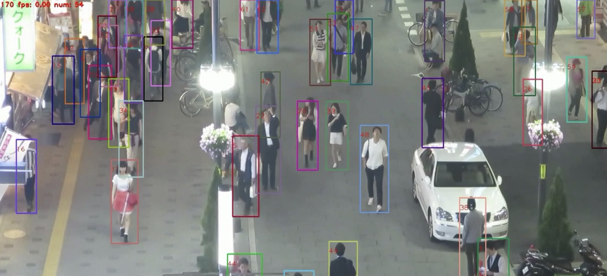
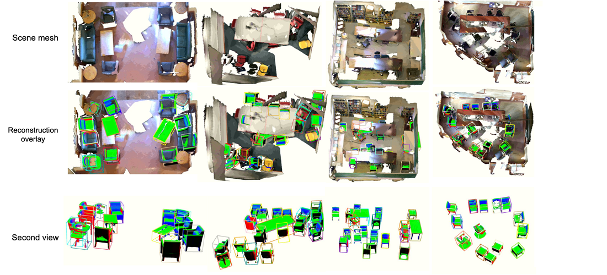
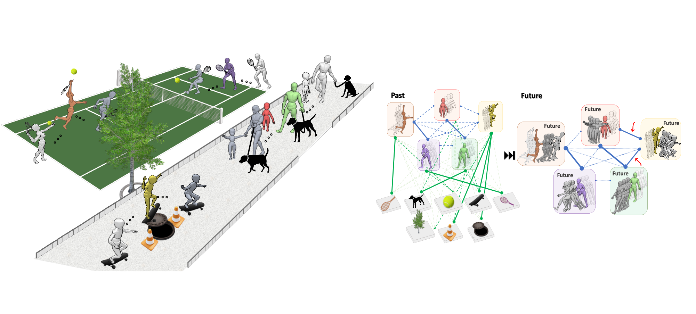
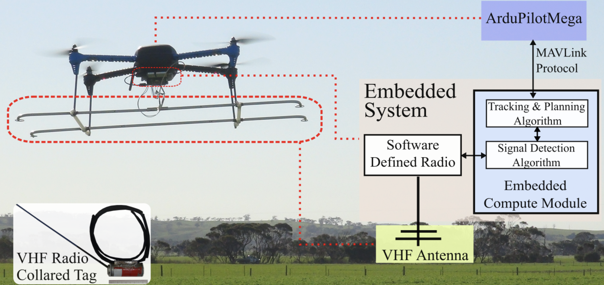

Basic Vision Problems: Obejct Detection & Segmentation

Multi-Object Tracking

3D Object Detection and Reconstruction from Monocular Video

3D Visual Perception for a Mobile Autnomous Agent in Human Environments

JRDB: JackRabbot Dataset and Benchmark

Human Social Trajecotry Forecasting

Human Trajectory and Pose Dynamics Forecasting in the Wild

Human Spatio-temporal Action, Social Group and Social Activity Detection

Active Visual Navigation in an Unexplored Environment

Single or Multi-UAV Planning for Discovering and Tracking Mobile Objects